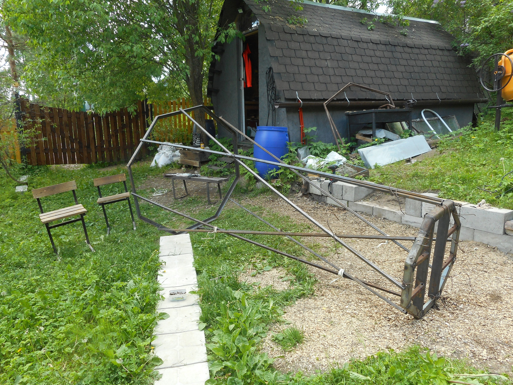
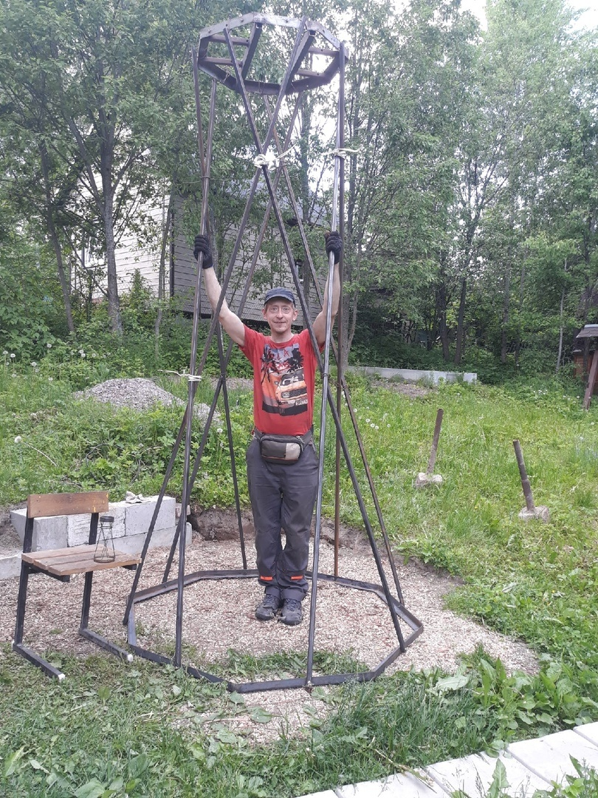
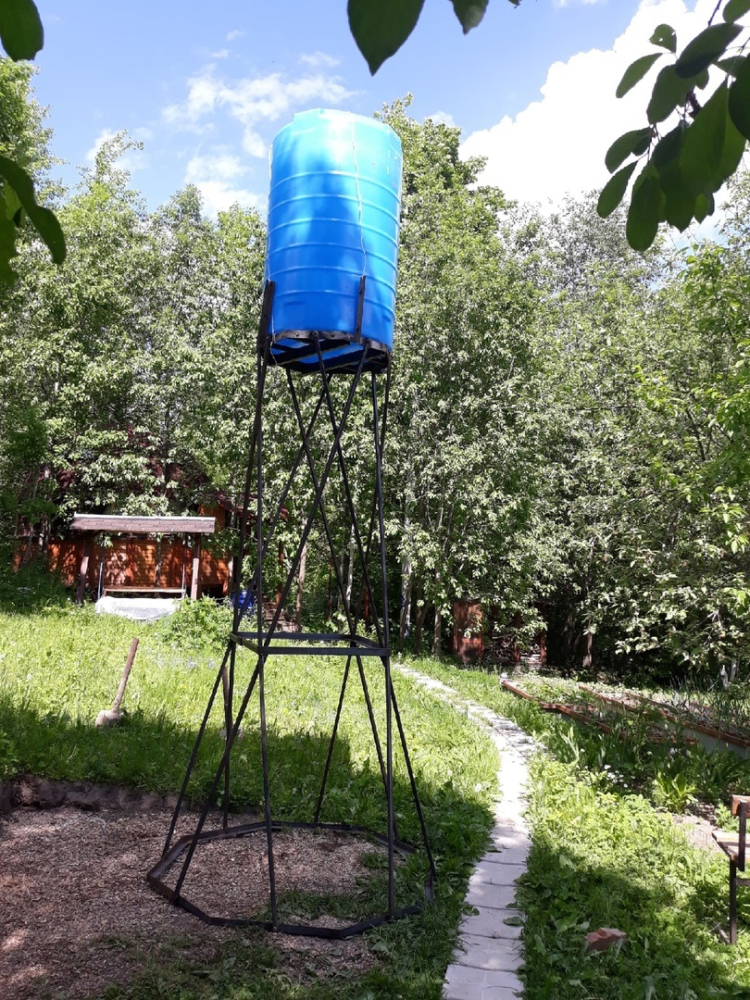

Описание конструкции
Башня состоит из восьмиугольного основания, диаметром 1,5м. и верхней площадки диаметром 0,75м., связанных между собой восемью «образующими» гиперболоида – квадратными трубами 25х25мм. Площадки изготовлены из разнообразного б\у- уголка, из него же сделаны два дополнительных стягивающих пояса, обеспечивающих жесткость всей конструкции. К верхней площадке крепится 500-литровый бак. Фундаментом сооружения служат 6 бетонных блоков 20х20х40см, к которым металлическая часть крепится с помощью самодельных анкеров
Сборка
Первым делом были изготовлены две площадки оснований и залиты бетонные блоки с вмурованными внутрь анкерами. Далее, необходимо было соединить площадки между собой так, чтобы получился гиперболоид, и именно здесь и возникли основные трудности. При попытках собрать тело гиперболоида в лежачем положении раз за разом получалась какая-то ерунда. То образующие не хотели вставать на предназначенные им места, то основания получались не параллельны друг другу (а перекошенная башня – совсем не тот результат, который мы хотели получить). Решение: башню стали собирать стоя, временно скрепляя образующие, в местах их пересечения, проволокой. В дальнейшем, все соединения были обварены, весь металл отгрунтован и окрашен. К получившейся конструкции, в наземном положении был прикреплен пластиковый бак, дополнительно зафиксированный металлическим тросом. Силами двух человек башня была снова приведена в вертикальное положение и установлена на фундамент в самом высоком углу участка
Эксплуатация
Башня накачивается технической водой из ручья через обычный шланг и питает нашу небольшую водопроводную сеть из пары умывальников, душевой кабины с водогреем и стиральной машины. Так же есть возможность подключить шланги для полива огорода. Из-за большого перепада высот на нашем участке, плюс высоты самой башни, давление в системе получается вполне приличным. Летом наполнять бочку приходилось раз в пару недель, осенью такого объема воды вполне хватает на месяц. Питьевая вода, как и прежде, берется из общедеревенского колодца.
Выводы
Реализованное нами решение трудно назвать оптимальным с точки зрения простоты изготовления. Не назвал бы я его и универсальным и необходимым каждому. Но, конкретно в наших условиях оно всех вполне устраивает. Из явных плюсов – необычный и интересный внешний вид сооружения, ради которого, собственно, все и затевалось. Ну, и инженеру Шухову было бы приятно знать, что изобретенные им конструкции не забыты =)